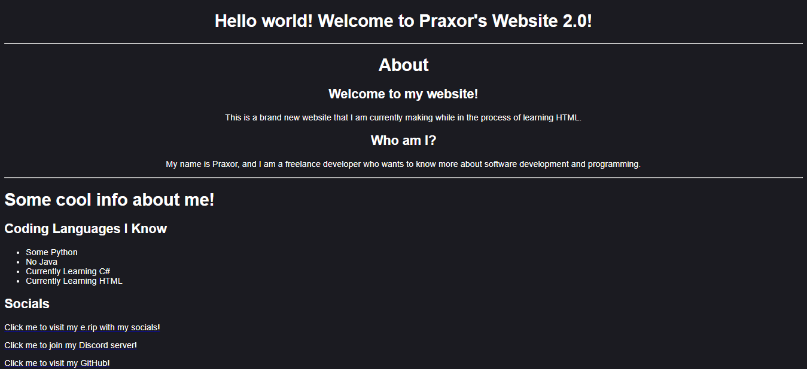
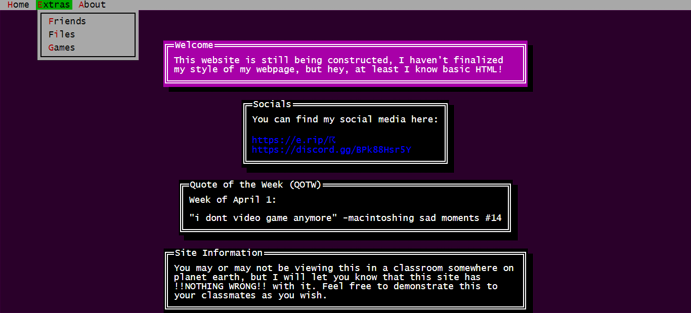
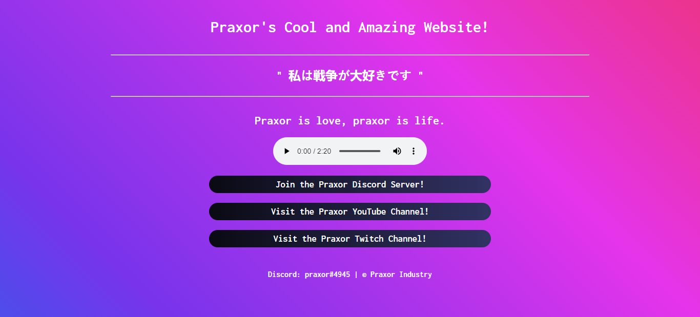

About The Praxor Website
Hello world!
8-Bit Weapon - M.U.L.E. (Bitblaster Mix) (Music used on Older Versions of Praxor Website)
I am praxor, a web developer. Pretty sad, yes? Not really, I somehow happen to find joy in creating and doing the whole coding thing creative, so I just kinda made this website for fun. You know, casual stuff. I made this version of my website using Bootstrap 5.3, and I have had the most fun learning and making this website with this cool design library. Anyways, there's a violent history to this website, so I am gonna share it with you now.
Section 1: From the beginning
ok so basically like i woke up one day, decided to get the domain praxor.tk, and then go wild with Github Pages. Not my proudest moment, but it certainly was a beginning for a silly goober like me who was learning HTML at the time.
Section 2: The Praxor Website V2 & V3
I decided to start naming versions of my website as I got more progressed in my HTML knowledge! However, V2 of my website was merely a shadow update and fix of my current beginner web page portfolio thing. This is also the time where I started calling my website a virtual portfolio rather than a website about me, ofc to sound cooler. Version 3 of my website was crafted using a CSS library that I personally thought was cool, called TuiCSS.
Section 3: Actual Madness, Insanity even.
When I got to this point in my website development skills, I honestly thought this was the bomb back in late 2022. I thought this was the most swagger I have ever created yet. Little did I know I was about to humble myself extremely hard. There were no CSS libraries involved, and this website involved an animated scrolling CSS gradient background (using some stolen, yet open-source code) with some text over it. This is when I realized I needed to learn more HTML because this was not the bomb, but it was eye killing glory.
Section 4: Where We Are Now
After this release of The Praxor Website, I decided to test out some new designs, as this one was starting to get tiring. Inside this spinny thing I found more lesser known / unreleased versions of the website.
Section 5: The Future
In the end, it really doesn't matter (live laugh love Linkin Park), and my website will continue to grow. This website took one-and-a-half months to create, mainly because I was making it in the middle of class, like the tradition, and I didn't know Bootstrap's potential, and I plan on using it for a while before I move on to some newer or fancier design. I personally consider this website to be the greatest looking website I have ever seen, but that might change soon. Furthermore, I would like to point out that there are several easter eggs placed on the website, maybe some are intentional features, it truly depends on how you want to interpret it. I also want to truly thank you for reading this about page, as it did take me some time to find the words to express myself and my website's legacy greatly. Once again...